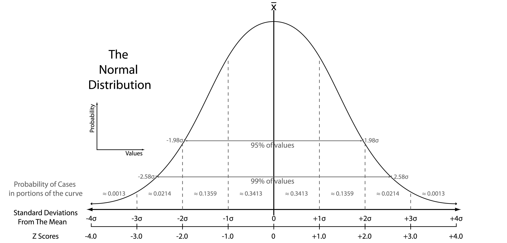
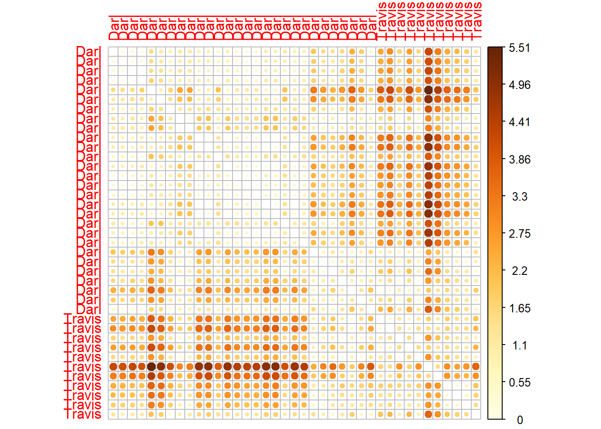

library(dplyr)
darts <- read.csv("https://petrpajdla.github.io/stat4arch/lect/w09/data/dartpoints_numeric.csv")Distances and similarity
Distances and similarity
- Distance and similarity are more or less opposite concepts.
- Distance is a numerical measure describing how are two objects (defined by certain variables) different (pairwise distance).
- Different distance measures exist for different data types.
Distance
- Scale 0 – \(\infty\)
- 0 – Two objects with 0 distance between them.
- \(\infty\) – Two objects with infinite distance.
- In practice, maximum distance is often 1.
- Denoted by \(D\) (for distance, or dissimilarity).
- \(D = 1 - S\)
Similarity
- Scale 0 – 1
- 0 – Two objects completely dissimilar (0%).
- 1 – Two objects competely similar (100%).
- Denoted by \(S\) (for similarity).
- \(S = 1 - D\)
Different distance measures
- Dichotomous variables
- Symmetrical – Simple matching distance
- Asymmetrical – Jaccard index (binary distance)
- Categorical variables
- Hamming distance
- Numeric continuous variables
- Euclidean distance
- Mahalanobis distance
- Mixed data sets
- Gower’s distance
Binary distances
- For
TRUE/FALSE,1/0,presence/absence(etc.) data
Symmetrical
- Two presences as match.
- Two absences as match.
If a trait is present, two objects are more similar. If a trait is absent, two objects are more similar. For example if biological sex is encoded in one variable with 0 for male and 1 for female, it is symmetrical.
- Simple maching distance
Asymmetrical
- Two presences as match.
- Two absences as mismatch.
If a trait is present, two objects are more similar. If a trait is absent in both cases, e.g. undetermined, missing etc., this does not affect similarity. This is more practical in archaeology.
- Jaccard index, i.e. binary distance
dist(x, method = "binary")
Distance between (continuous) numeric data
- To remove effects of scale (different units etc.), variables should be scaled (normalized).
Normalization
- z-score or z-transformation
\[ z = \frac{x - \mu}{\sigma} \]

Euclidean distance
- Defined for a Cartesian coordinate space.
- Uses Pythagorean theorem.
\[ d(p, q) = \sqrt{(q_1 - p_1)^2 + (q_2 - p_2)^2} \]
In R…
Normalization:
scale(x, center = TRUE, scale = TRUE)
Euclidean distance:
dist(x, method = "euclidean")
Code along
# summary of values
summary(select(darts, Length, Width, Thickness, Weight)) Length Width Thickness Weight
Min. : 30.60 Min. :14.50 Min. : 4.000 Min. : 2.300
1st Qu.: 40.85 1st Qu.:18.55 1st Qu.: 6.250 1st Qu.: 4.550
Median : 47.10 Median :21.10 Median : 7.200 Median : 6.800
Mean : 49.33 Mean :22.08 Mean : 7.271 Mean : 7.643
3rd Qu.: 55.80 3rd Qu.:25.15 3rd Qu.: 8.250 3rd Qu.:10.050
Max. :109.50 Max. :49.30 Max. :10.700 Max. :28.800 # normalization
darts_norm <- darts %>%
mutate(Length = scale(Length), Width = scale(Width),
Thickness = scale(Thickness), Weight = scale(Weight))
# or this shorthand can be used
darts_norm <- darts %>%
mutate(across(all_of(c("Length", "Width", "Thickness", "Weight")), scale))# summary of normalized values
summary(select(darts_norm, Length, Width, Thickness, Weight)) Length.V1 Width.V1 Thickness.V1
Min. :-1.470672596590 Min. :-1.469439528820 Min. :-2.1363402766800
1st Qu.:-0.665879481618 1st Qu.:-0.683997993872 1st Qu.:-0.6670232741610
Median :-0.175151972489 Median :-0.189460731127 Median :-0.0466449842071
Mean : 0.000000000000 Mean : 0.000000000000 Mean : 0.0000000000000
3rd Qu.: 0.507940720219 3rd Qu.: 0.595980803820 3rd Qu.: 0.6390362836370
Max. : 4.724271478660 Max. : 5.279539586280 Max. : 2.2389592419400
Weight.V1
Min. :-1.269965702070
1st Qu.:-0.735153942506
Median :-0.200342182946
Mean : 0.000000000000
3rd Qu.: 0.572163691974
Max. : 5.028928354970 Code along
# subset of Travis and Darl types of dart points
darts_subset <- filter(darts_norm, Name %in% c("Travis", "Darl"))
# matrix with numerical variables only
darts_mx <- darts_subset %>%
select(Length, Width, Thickness, Weight) %>%
as.matrix()
# add row names to the matrix
rownames(darts_mx) <- darts_subset$Name
# count Euclidean distance
darts_d <- dist(darts_mx, method = "euclidean", diag = TRUE)
round(as.matrix(darts_d)[1:6, 1:6], 2) Darl Darl Darl Darl Darl Darl
Darl 0.00 0.42 0.47 0.40 1.57 1.14
Darl 0.42 0.00 0.43 0.43 1.50 1.18
Darl 0.47 0.43 0.00 0.28 1.51 1.36
Darl 0.40 0.43 0.28 0.00 1.74 1.47
Darl 1.57 1.50 1.51 1.74 0.00 0.90
Darl 1.14 1.18 1.36 1.47 0.90 0.00- Result is a distance matrix.
- It is symmetrical. Lower triangular is the same as upper triangular.
- On the diagonal, there is distance of the given object to itself, i.e. 0.
Visualizing distance matrix
- Package
corrplothas a nice way of plotting heatmaps.
library(corrplot)
# arg. is.corr set to FALSE, because we are not visualizing correlation matrix
corrplot(as.matrix(darts_d), is.corr = FALSE)
Resources
For a much more detailed overview of distance methods, see the tutorial on classification by Schmidt, S. C. et al. DOI: 10.5281/zenodo.6325372 (direct link to a HTML file is here).